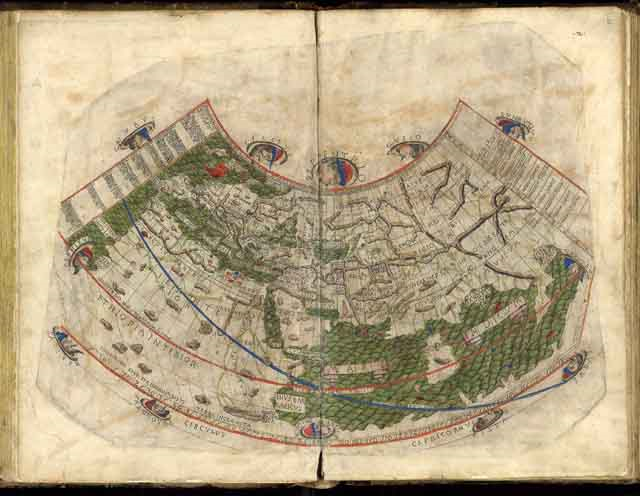

Foundations of Geovisualization
The 2D Map - CS-GY 6313 - Fall 2025
2025-10-24
Three Maps That Changed the World


John Snow’s 1854 Cholera Map
What is a map for?
- Analysis
- Communication
Snow’s Innovation:
- He didn’t just plot data
- He used spatial relationships to solve a problem
- Deaths clustered around the Broad Street pump
- Had the handle removed → outbreak stopped

Historical Milestones in Cartography
Ptolemy’s Geographica (c. 150 AD)
- Foundation of modern cartography
- Latitude and longitude coordinate system
- Over 2000 years of influence

Minard’s Flow Map (1869)
- Multiple variables in one visualization:
- Troop size (width)
- Temperature (bottom scale)
- Location (geography)
- Direction (color: tan = advance, black = retreat)

Projection Types: What They Preserve
Conformal
Preserves shape & angles
Use: Navigation (constant compass bearing)
Equal-Area
Preserves relative area

Use: Thematic maps (choropleths)
Equidistant
Preserves distance from center
Use: Distance calculations
Projection Hall of Shame/Fame
Mercator: The Infamous Example
The Problem: Greenland looks bigger than Africa
Reality: Africa is 14× larger than Greenland
Albers Equal-Area: The Fix

The Solution: Use equal-area for thematic maps
Rule: If you shade areas, you MUST use an equal-area projection.
Type 1: Choropleth Map

Definition:
Regions are shaded based on a value
Use Cases:
- Categorical data (winner/loser)
- Rates and percentages
- Density measures
Good for: Seeing broad regional patterns
Type 2: Proportional Symbol Map

Definition:
Symbols (e.g., circles) are scaled based on a value
Use Cases:
- Absolute quantities
- Magnitude comparisons
- Population distributions
Good for: Showing where the values are, not just the land area
Type 4: Flow Map

Definition:
Shows movement or connections between regions
Use Cases:
- Trade routes
- Migration patterns
- Transportation networks
Visual encoding: Line width ∝ quantity flowing
Stop Using Rainbow Color Scales
❌ BAD: Rainbow

Problems:
- Not perceptually uniform
- No intuitive order (is yellow > green?)
- Creates false boundaries
- Misleading visual jumps
✓ GOOD: Perceptual Scales


Solutions to the Geography Problem
❌ Misleading
Land area dominates
✓ Solution 1: Symbols
Shows where votes are
✓ Solution 2: Cartogram

Distorts geography by value